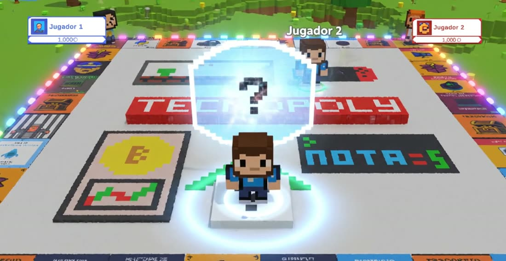

El juego de mesa digital donde avanzar depende de lo que sabes. Compra empresas tecnológicas, responde preguntas de tu asignatura y negocia con tus compañeros para construir tu imperio.
Cómo se juega
Cada partida reúne de 2 a 4 estudiantes. El anfitrión escoge la asignatura y la categoría de preguntas que el docente preparó, y el tablero hace el resto.
Escribe tu nombre y tu código de estudiante o correo. El anfitrión crea la sala y comparte su código de 6 caracteres.
El anfitrión selecciona la asignatura y una categoría de preguntas, o todas, e inicia la partida.
En tu turno lanza los dados con la barra espaciadora. Tu ficha avanza y la casilla decide lo que pasa.
Responde preguntas, compra propiedades, paga rentas y haz negocios para completar tus grupos.
Al terminar, cada jugador recibe una nota de 1 a 5 que queda registrada para el docente.
Reglas del tablero
Todos empiezan con 1.000 créditos. El tablero tiene 24 propiedades de empresas tecnológicas agrupadas en 8 grupos, casillas de pregunta, la Salida y la Cárcel.
Al caer en una casilla de pregunta tienes 20 segundos para responder.
Compra cualquier propiedad libre en la que caigas. Si caes en la de otro jugador, le pagas la renta automáticamente.
Pasar por la Salida te da 200 créditos.
Para construir necesitas las 3 propiedades del grupo.
En tu turno pulsa NEGOCIAR para comprarle una propiedad a otro jugador o venderle una tuya, al precio que acuerden.
El otro jugador tiene 30 segundos para aceptar o rechazar.
Mezcladas con las preguntas hay cartas especiales:
Si sacas dobles, vuelves a tirar. Con 3 dobles seguidos vas a la cárcel.
En la cárcel solo sales sacando dobles; ir a la cárcel cuesta 100 créditos.
Nota final
Propuesta pedagógica
En Tecnopoly saber es avanzar: sin responder bien no hay créditos para comprar, construir ni negociar. El juego combina aprendizaje basado en juegos y gamificación con la evaluación del docente.

Tecnologías
Un ecosistema completo: el juego en el navegador, un servidor multijugador en tiempo real, una API con base de datos y un panel para los docentes.
Reúne a tus compañeros, crea una sala y demuestra lo que sabes.